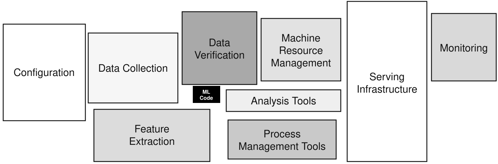

You have a plan. Now you need the three things that make it real — and all three are scarce: people, infrastructure, and money. This session covers who belongs on an AI team and what each role actually does, the infrastructure a project manager must understand without configuring it, and how to budget work whose cost genuinely cannot be pinned down in advance. Plan ~45 min for the lesson and its self-check.
MekongPay's COO has signed off: six months, a team of five, cloud budget to be agreed. Your first instinct might be to hire five data scientists and let them build the fraud model. That instinct would sink the project — because the model is the small part.
Before you allocate anyone, an instinct check: in a real production machine-learning system, what share of the whole system is the actual machine-learning code — the model itself, as opposed to everything around it (data plumbing, serving, configuration, monitoring)?

Session 2 gave you a plan. A plan without resources is a wish. This session makes the plan executable along three axes — who does the work (human resources), what they work on (technical infrastructure), and what it costs (budgeting under genuine uncertainty).
Resource the system, not the model. The model is 5% of the machine — staff and fund the other 95% or it never ships.
An AI initiative fails the moment one link in this chain is missing. The standard team is:
Read that left to right and you have the delivery chain: data arrives, becomes a model, becomes a running service, is judged useful by someone who knows the business, and is steered by someone accountable for scope, time, cost and quality.
The commonest staffing mistake is hiring modellers and forgetting the two roles either side of them — the data engineer who feeds the model and the ML engineer who ships it.
And the business stakeholders have a real job too: they supply operational context, define the decision the model supports, flag regulatory constraints, and judge whether outputs are actually useful. A model can be technically accurate and operationally irrelevant — only the business side can catch that.
Most AI projects lean on outsiders: AI consultancies, cloud providers, data providers, specialist development partners. Before signing, a project manager must pin down four things — data ownership and usage rights, intellectual property in the models and algorithms, service-level expectations, and long-term maintenance responsibility. Get these wrong and you discover after go-live that your fraud model, or the labelled data it was trained on, is not legally yours to keep using.
Two words, used precisely, because the contract turns on the difference between them. A label is a human verdict attached to a past example — an analyst decided this transaction was fraud. The weights are the internal numbers the model adjusts during training until it reproduces those verdicts. They are two separate assets, and they can end up owned by two different companies: your analysts produced the labels, the vendor's training run produced the weights. Say which of the two you are buying, in writing, before anyone starts.
Six requests from MekongPay's first month. Which role owns each? A wrong pick stays amber.
Nobody expects a project manager to configure a GPU cluster. But infrastructure decisions drive your timeline, your budget and your risk register, so you must understand what each layer is for:
The three big cloud platforms — AWS, Microsoft Azure, Google Cloud — package most of this: scalable compute on demand, managed ML services, integrated storage, prebuilt AI APIs. That converts capital investment into operating expense, which changes how you have to budget.
Infrastructure is not the technical team's private business. It is your schedule, your budget and your integration risk wearing a different hat.
It sounds like an IT chore. It is the most common way an AI project loses three weeks without anyone doing anything wrong, so it is worth understanding properly.
When you rent compute from AWS, Azure or Google Cloud, your account carries a quota — a cap on how many machines of each type you are allowed to run in each region. The default cap for GPU machines is frequently zero. Not "low". Zero. Your company has an account, the budget is approved, the engineers are hired, and the platform will simply refuse to start the machine.
Raising it is a request to the provider — a support ticket that a human reviews. It may take hours; it may take a fortnight; it may come back granted in part ("you asked for eight, you may have two") or refused. You do not control the timing and you cannot escalate your way past it.
And quota is only permission. Even with it, popular GPU types run out in a region — you will see insufficient capacity, which means the machines are physically busy serving somebody else. That is not a bug you can fix; it is a queue you are in.
So what does a project manager actually do? Three things, all of them cheap, all of them only cheap if done early:
This is the same shape as the data-access problem from Session 2, and it fails the same way. Nobody sends you an email saying “we cannot get the machines.” You get a status report where a green task turned amber, and by the time you ask why, the month is gone.
Compute you have budgeted for is not compute you can use. Between the money and the machine sits somebody else's approval queue — put it on the plan in week one.
Optional and ungraded. These are made for engineers rather than project managers, so watch them for the vocabulary — instance types, regions, quotas, spot pricing, training versus serving — and ignore the command lines. The card above is the project-management version; these are what your team is looking at.
Six infrastructure needs from the MekongPay build. Which layer does each belong to? A wrong pick stays amber.
Traditional IT estimation models routinely underestimate AI costs, because AI spending is driven by data, experimentation and scarce talent rather than by a fixed build. Every AI budget breaks into five areas, and they interact across the lifecycle:
Two of the five — data preparation and post-deployment operations — are the ones sponsors forget. They are also the two that decide whether the model keeps working.
AI cost uncertainty is structural, not sloppiness. It comes from data availability and quality surprises, model performance variability, experimentation cycles and failed models (you pay for the experiments that didn't work), changing business requirements, and regulatory constraints discovered late. A budget that admits none of this is not a confident budget — it is a fragile one.
So the discipline is: estimate honestly, fund in phases, and track continuously.
Six line items from MekongPay's draft budget. Classify each. A wrong pick stays amber.
Combining techniques improves reliability: parametric for compute and labelling, bottom-up for the engineering, analogous as a sanity check, scenarios for the modelling phase where the truth is a range.
And strategically: align spend with business value, prioritise high-impact use cases, evaluate cost–benefit trade-offs explicitly, and scale infrastructure gradually rather than buying for the end state on day one.
Phased funding is how you make an uncertain budget safe: the sponsor risks one phase at a time, and you earn the next one with evidence.
Six estimating problems from the MekongPay budget. Which technique is the natural fit? A wrong pick stays amber.
One attempt per question, every answer explained. Your score syncs to your instructor's dashboard as a self-check but does not count toward your grade — the mid-term MCQ tests exactly this style.
In Session 4 we turn to what can go wrong: the five risk categories unique to AI, how to analyse and prioritise them, and the governance and compliance frameworks — NIST AI RMF, the EU AI Act, GDPR — that increasingly decide whether a model may be deployed at all. Risk Management in AI Projects — Thu 13 Aug, live on Zoom.
Take the project you planned in Session 2 and resource it: name the team, choose the infrastructure, and put honest numbers — with honest uncertainty — against the work. Everything saves automatically and reaches your instructor's dashboard — no "submit" button, just type.
📎 This becomes §4 (resources & budget) of your final assignment. See it come together in Compile my project ↗.
In Session 4 you'll build the risk register for this resourced plan — including the risks your resourcing decisions have just created. Your answers follow you: the same project, session after session.